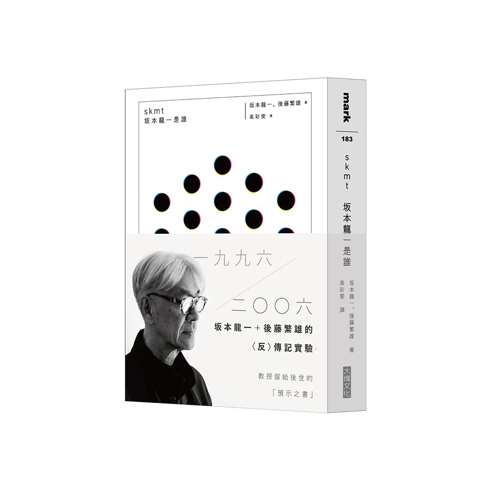

Author: 坂本龍一, 後藤繁雄
skmt 坂本龍一是誰
Author: 坂本龍一, 後藤繁雄
Translated by: 高彩雯
Publisher: 大塊文化
本書集結了從1996年到2006年，十年間不間斷的採訪、對話，同時也收錄了坂本龍一的部分日記、隨心雜感、部落格文章等。 與一般常見的自傳形式不同，全書均不見傳統的介紹、說明、評析；而是與之相反，一個個篇章往往從一個簡單的主題帶出， 然後圍繞主題，如同朋友閒聊般，即興地步步深入其中。因此各章均相當零碎散落，卻又沿著坂本龍一自身的核心思想， 巧妙地維持著連貫的一體性。正如後藤繁雄所言——「人是不斷持續運動的綜合有機體。」透過這些片段式的檔案與筆記， 本書精準的記錄下不同時空中，為人所熟知的坂本龍一。使讀者得以更靠近其創作脈絡與生命歷程外，同時更能發現未曾想像的坂本龍一之新面貌。 可以說，本書每一篇章都以極為深刻的方式，反覆叩問著「坂本龍一是誰」此命題。